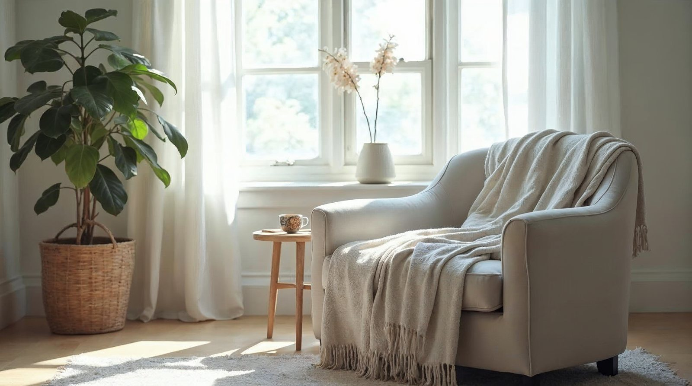
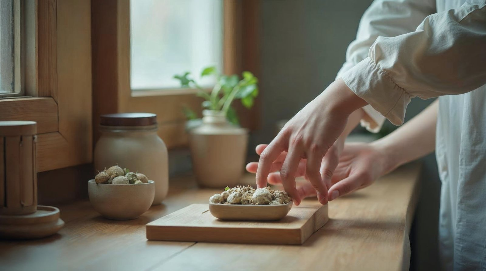
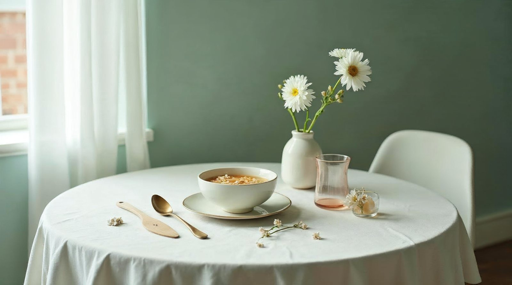
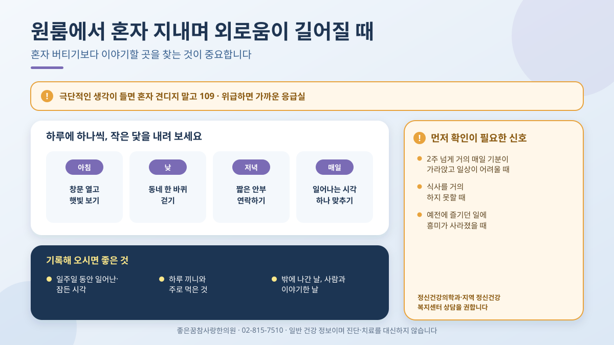

이종호 한의사 감수좋은꿈참사랑한의원 대표원장 (한의사 면허번호 19769)발행 2026-11-23 · 수정 2026-11-27
이 글의 차례
- 왜 이런 불편이 생길 수 있나요
- 왜 원룸 생활은 하루의 경계를 흐리게 할까요?
- 혼자라서 생긴 무기력과 우울은 어떻게 다른가요?
- 이런 하루가 이어지고 있지 않나요?
- 스스로 점검해 보세요
- 먼저 이렇게 여쭙니다
- 혼자 오래 지낸 분께 자주 듣는 몸의 불편은 무엇인가요?
- 일상에서 먼저 해 볼 수 있는 것
- 작은 리듬부터 다시 세우는 방법은 무엇인가요?
- 밖에 나가기가 버거울 때는 어디서부터 시작할까요?
- 배달 음식에 기대는 식사는 어떻게 바꿔 갈까요?
- 한의원에서 함께 살필 수 있는 경우
- 몸 쪽 원인도 함께 살펴야 하나요?
- 얼마나 지켜보고 언제 상담할까요?
- 멀리 사는 가족이나 친구는 어떻게 도울 수 있나요?
- 이렇게 기록해 오시면 상담이 쉬워집니다
- 이런 증상은 먼저 확인이 필요합니다
원룸에서 혼자 지내며 외로움과 무기력이 길어진다면, 하루 일과와 잠, 식사, 사람과의 연락을 먼저 묻고 흐트러진 생활 리듬부터 함께 세워 봅니다. 노량진과 상도동에는 원룸이나 고시원에서 혼자 지내며 며칠 동안 누구와도 말하지 않고 배달 음식으로 하루를 보낸다는 분들이 있습니다.
왜 이런 불편이 생길 수 있나요
- 사람과 이야기하는 시간이 줄면 하루의 구분이 흐려지고, 일어나고 먹고 자는 시간이 쉽게 무너집니다.
- 햇빛을 보지 못하고 움직임이 줄면 잠과 기분의 리듬도 함께 흔들릴 수 있습니다.
- 끼니가 불규칙하고 배달 음식에 기대는 생활은 몸을 더 무겁게 느끼게 합니다.
- 무기력이 길어지면 우울로 이어질 수 있어, 혼자 버티기보다 이야기할 곳을 찾는 것이 중요합니다.
왜 원룸 생활은 하루의 경계를 흐리게 할까요?
원룸은 잠자는 곳과 밥 먹는 곳, 일하거나 공부하는 곳이 한 공간에 겹쳐 있습니다. 침대 옆에 책상이 있고 그 책상이 식탁이 되면, 눈을 떠도 출근하듯 자리를 옮기는 순간이 없습니다. 그래서 하루가 시작되고 끝나는 경계가 쉽게 흐려집니다.
창이 작거나 건물 사이에 막혀 낮에도 어둑한 방이라면, 아침이 온 것을 몸이 알아차리기 어렵습니다. 낮과 밤의 밝기 차이가 줄면 잠드는 시각이 조금씩 뒤로 밀리고, 늦게 일어난 날은 끼니도 한 번 줄어듭니다.
혼자 지내면 누가 깨워 주거나 밥 먹자고 부르는 일이 없습니다. 처음에는 자유롭게 느껴지지만, 그 신호가 없는 날이 길어지면 몸의 리듬을 스스로 붙잡아야 하는 부담이 생깁니다. 무기력은 게으름이 아니라 이 리듬이 풀린 결과인 경우가 많습니다.
수험이나 취업 준비처럼 목표가 멀리 있는 생활이라면 이 부담이 더 커집니다. 오늘 한 일이 눈에 보이지 않으니 하루를 마무리했다는 느낌이 없고, 그 공백을 휴대폰 화면이 채우면서 잠드는 시각이 또 늦어집니다. 하루 끝에 '오늘 한 일 세 가지'를 짧게 적어 두는 것만으로도 하루의 마디를 느끼는 데 도움이 됩니다.
혼자라서 생긴 무기력과 우울은 어떻게 다른가요?
혼자 지내서 생긴 무기력은 사람을 만나거나 밖에 나갔다 온 날 조금 가벼워지는 경우가 많습니다. 예를 들어 오랜만에 친구와 밥을 먹은 날 저녁에는 잠도 비교적 잘 오고, 다음 날 아침이 덜 무겁다면 생활의 리듬이 큰 몫을 하고 있을 수 있습니다.
반대로 좋아하던 사람을 만나도 즐겁지 않고, 무엇을 해도 기분이 그대로 가라앉아 있다면 우울감이 바탕에 있는지 함께 살펴야 합니다. 잠이 지나치게 늘거나 줄고, 입맛과 체중이 눈에 띄게 달라지는 것도 확인할 단서입니다.
둘은 칼로 자르듯 나뉘지 않습니다. 혼자 보내는 시간이 길어지며 무기력이 깊어지고, 그것이 우울로 이어지기도 합니다. 그래서 어느 쪽인지 혼자 판단하기보다, 언제부터 어떻게 달라졌는지를 함께 짚어 보는 것이 첫걸음입니다.
이런 하루가 이어지고 있지 않나요?
- 예를 들어 낮 12시가 넘어 일어나 휴대폰을 보다가 첫 끼를 오후 3시에 배달로 먹는 경우
- 예를 들어 사흘 동안 한 번도 현관문 밖에 나가지 않았는데 그게 이상하게 느껴지지 않는 경우
- 예를 들어 새벽 3시까지 영상을 틀어 놓아야 잠이 드는 경우
- 예를 들어 가족의 전화가 와도 받기 귀찮아 문자로만 답하는 경우
- 예를 들어 방이 어질러져 있는 것을 보면 더 지쳐서 손을 대지 못하는 경우
이런 장면이 하나둘 겹친다면 마음이 약해서가 아니라 하루를 받쳐 주던 틀이 느슨해졌다는 신호로 보시면 됩니다. 틀은 다시 세울 수 있고, 그 순서를 함께 정하는 것이 진료의 한 부분입니다.
진료실에서 이런 하루를 이야기하실 때 부끄러워하시는 분이 많습니다. 하지만 저에게는 지금의 생활을 정확히 아는 것이 출발점이라, 있는 그대로 들려주시면 됩니다.
스스로 점검해 보세요
- 일어나는 시각이 날마다 두세 시간 넘게 달라진다
- 하루 첫 끼를 오후에야 먹는 날이 많다
- 일주일에 사흘 넘게 집 밖에 나가지 않는다
- 누군가와 소리 내어 대화한 날이 일주일에 하루도 안 된다
- 침대에서 먹고, 보고, 일하는 시간이 길다
- 예전에 즐기던 일을 시작하기가 버겁다
- 몸이 늘 무겁고 오래 누워 있어도 개운하지 않다
세 가지 넘게 해당한다면 생활 리듬부터 다시 살펴볼 때입니다. 항목 수보다 이 상태가 몇 주째 이어지고 있는지가 더 중요한 단서입니다.

먼저 이렇게 여쭙니다
- 하루에 사람과 이야기하는 시간이 있나요?
- 일어나고 잠드는 시각은 일정한가요?
- 끼니는 어떻게 챙기시나요?
- 예전에 즐기던 일에 흥미가 줄었나요?
- 기분이 가라앉은 날이 얼마나 이어졌나요?
첫 방문에서는 맥을 짚으며 몸의 상태를 먼저 봅니다. 혼자 오래 지내신 분은 손발이 차거나, 소화가 더디거나, 변이 불규칙하다는 이야기를 함께 하시는 경우가 많아 이런 몸의 변화도 하나씩 여쭙습니다.
외로움이나 마음 이야기는 처음부터 다 꺼내지 않으셔도 됩니다. 잠과 식사처럼 말하기 쉬운 것부터 시작하고, 편해지면 그때 조금 더 이야기를 나누면 됩니다. 말이 잘 안 나오는 날이라면 적어 오신 메모를 보며 이야기해도 괜찮습니다.
혼자 오래 지낸 분께 자주 듣는 몸의 불편은 무엇인가요?
가장 흔한 것은 목과 허리의 뻐근함입니다. 침대에 기대 휴대폰을 오래 보거나 바닥에 앉아 낮은 탁자에서 밥을 먹는 자세가 길어지면, 목이 앞으로 빠지고 등이 굽은 채로 굳기 쉽습니다.
속이 더부룩하고 변이 며칠씩 안 나온다는 이야기도 자주 듣습니다. 움직임이 줄고 끼니 시간이 들쭉날쭉하면 장도 리듬을 잃습니다. 낮에 졸리고 밤에 말똥말똥한 것, 오래 자도 머리가 맑지 않은 것도 같은 흐름에서 나오는 경우가 많습니다.
이런 불편은 마음의 무기력과 서로 맞물려 있어, 몸이 조금 가벼워지면 밖에 나갈 힘도 조금 생깁니다. 그래서 목·허리 긴장이 크면 침이나 추나를, 잠과 소화가 중심이면 한약 상담을 함께 고려합니다.
일상에서 먼저 해 볼 수 있는 것
- 아침에 창문을 열고 햇빛 보기
- 하루 한 번 동네를 걷거나 공원 가기
- 가족이나 친구에게 짧은 안부 연락하기
- 주민센터나 도서관 프로그램 찾아보기
- 일어나는 시각 하나만이라도 매일 같게 맞추기
작은 리듬부터 다시 세우는 방법은 무엇인가요?
처음부터 모든 것을 바꾸려 하면 오히려 지치기 쉽습니다. 저는 일어나는 시각 하나만 먼저 정하시길 권합니다. 잠드는 시각은 그날 사정에 따라 달라도, 일어나는 시각이 고정되면 몸의 시계가 조금씩 제자리를 찾습니다.
일어나서는 커튼을 걷고 창가에서 5분이라도 바깥 빛을 보세요. 원룸 창이 작다면 현관 밖 복도나 건물 앞까지 나가 보는 것도 좋습니다. 이렇게 아침 빛을 받는 일이 밤에 잠이 오는 시각을 앞당기는 데 도움이 됩니다.
좁은 방이라도 구역을 나누어 보세요. 침대는 잠만 자는 곳으로 두고, 밥은 책상이나 작은 접이식 탁자에서 먹는 식입니다. 의자에 앉아 밥을 먹는 것만으로도 하루에 작은 마디가 생깁니다.
끼니는 거창하지 않아도 됩니다. 일어난 지 두 시간 안에 우유 한 잔, 바나나 하나라도 드시면 몸이 아침을 알아차립니다. 배달을 시킬 때도 한 번에 두 끼 분량을 나눠 두면 다음 끼니를 거르는 일이 줄어듭니다.
사람과의 연결은 짧아도 괜찮습니다. 편의점에서 계산하며 인사 한마디를 건네거나, 가족 단톡방에 사진 한 장을 올리는 것도 연결입니다. 일주일에 한 번은 목소리로 통화하는 날을 정해 두면 대화가 끊기는 기간이 길어지지 않습니다.
방 정리는 한 번에 하지 마시고 하루에 한 구역씩만 하세요. 오늘은 책상 위, 내일은 싱크대처럼 나누면 부담이 덜합니다. 눈에 보이는 공간이 조금 정돈되면 그 안에서 보내는 하루도 덜 무겁게 느껴집니다.
밖에 나가기가 버거울 때는 어디서부터 시작할까요?
외출이 어렵게 느껴질 때는 목표를 아주 낮게 잡으세요. 첫 주는 현관문을 열고 복도에 1분 서 있기, 둘째 주는 건물 앞까지 나가기, 셋째 주는 집 앞 편의점까지 걷기처럼 계단을 나누면 됩니다.
나갈 이유를 하나 만들어 두는 것도 도움이 됩니다. 분리수거하는 날, 우편함을 확인하는 날, 동네 빵집에서 다음 날 아침거리를 사 오는 날처럼 작은 볼일을 정해 두면 몸이 따라 나가기가 한결 쉽습니다.
상도동 주변에는 짧게 걸을 수 있는 골목과 공원이 있습니다. 처음에는 사람이 적은 이른 아침이나 저녁 시간에 10분만 걸어 보세요. 돌아와서 그날 달력에 동그라미 하나를 그려 두면 다음 외출의 작은 근거가 됩니다.
배달 음식에 기대는 식사는 어떻게 바꿔 갈까요?
배달 음식을 끊으라고 말씀드리지는 않습니다. 혼자 사는 분께 매 끼니 요리는 큰 부담이기 때문입니다. 대신 하루 한 끼만이라도 직접 꺼내 먹는 끼니를 만들어 보세요. 즉석밥에 달걀 하나, 김 한 봉지만으로도 충분합니다.
배달을 시킬 때는 국물과 튀김이 함께 오는 메뉴만 반복하지 않도록, 일주일에 두세 번은 밥과 반찬이 나뉜 메뉴를 골라 보세요. 밤 늦게 먹는 야식이 잦으면 잠이 얕아지고 아침 입맛도 떨어져, 다음 날 리듬이 다시 흐트러지기 쉽습니다.
냉장고에 바로 먹을 수 있는 것을 두세 가지 두면 끼니를 거르는 날이 줄어듭니다. 요구르트, 삶은 달걀, 방울토마토처럼 손이 덜 가는 것이면 됩니다.

한의원에서 함께 살필 수 있는 경우
- 무기력과 피로가 이어지는 경우 잠과 식사, 생활 리듬을 함께 살핍니다.
- 외로움과 함께 잠이 흐트러진 경우 잠의 모양과 마음의 부담을 함께 살핍니다.
- 오래 누워 지내 몸이 뻐근한 경우 몸의 긴장과 활동량을 함께 살핍니다.
좋은꿈참사랑한의원에서는 맥부터 짚으며 혼자 지내는 하루를 서두르지 않고 여쭙습니다. 그다음 침, 한약 상담, 잠과 식사 리듬을 세우는 방법 가운데 상태에 맞는 것을 정합니다.
다음 방문 날을 정해 두면 그날을 기준으로 하루 계획을 세우는 작은 출발점이 될 수 있습니다.
몸 쪽 원인도 함께 살펴야 하나요?
무기력과 피로가 마음에서만 오는 것은 아닙니다. 빈혈이나 갑상선 기능 변화처럼 몸의 상태가 기운을 떨어뜨리는 경우도 있어, 최근 건강검진을 받으셨다면 결과지를 함께 봅니다. 검진을 받은 지 오래되었다면 가까운 내과나 보건소 검진을 권하기도 합니다.
끼니가 불규칙하면 단백질과 채소가 부족해지기 쉽고, 오래 앉거나 누워 지내면 근육이 줄어 조금만 움직여도 숨이 차고 지칩니다. 이렇게 몸이 약해지면 밖에 나가기가 더 버거워지고, 그래서 더 안에 머무는 고리가 생깁니다.
계절도 영향을 줍니다. 해가 짧아지는 늦가을과 겨울에는 원룸 안이 더 일찍 어두워져 저녁 무렵부터 처지는 느낌이 커질 수 있습니다. 이 시기에는 낮 동안 바깥에 머무는 시간을 의식적으로 늘려 보시길 권합니다.
얼마나 지켜보고 언제 상담할까요?
생활 리듬을 바꾸고 2주쯤은 지켜보세요. 일어나는 시각이 조금씩 일정해지고 밖에 나가는 날이 늘었는데도 몸이 계속 무겁다면, 혼자 애쓰기보다 상담을 받아 보시길 권합니다.
생활을 바꿔 보아도 한 달 넘게 무기력이 그대로라면, 혼자 더 버티기보다 이야기할 곳을 늘려 가는 것이 좋습니다. 진료실에서도 그 이야기를 편하게 꺼내 주세요.
멀리 사는 가족이나 친구는 어떻게 도울 수 있나요?
혼자 지내는 가족이 걱정된다면, 길게 설득하기보다 짧고 자주 연락하는 쪽이 부담이 적습니다. "밥은 먹었어?" 같은 한 줄 안부도 하루에 한 번 누군가 나를 떠올린다는 신호가 됩니다.
만날 수 있다면 집 안에서보다 밖에서 만나 함께 걷거나 밥을 먹어 보세요. 방 상태나 생활 습관을 지적하는 말은 오히려 연락을 피하게 만들 수 있어, 처음에는 들어 주는 데 마음을 두시길 권합니다.
진료를 권하고 싶다면 "마음이 힘들어 보인다"보다 "요즘 잠은 어때, 몸은 안 무거워?"처럼 몸 이야기로 시작하면 받아들이기 쉽습니다. 처음 오실 때 가족이 함께 오셔도 괜찮습니다.

이렇게 기록해 오시면 상담이 쉬워집니다
- 일주일 동안 일어난 시각과 잠든 시각
- 하루 끼니와 주로 먹은 것
- 밖에 나간 날과 사람과 이야기한 날
- 복용 중인 약
기록은 잘 쓰려고 애쓰지 않으셔도 됩니다. 달력에 일어난 시각만 숫자로 적고, 밖에 나간 날에 동그라미를 치는 정도면 충분합니다. 2주쯤 모이면 어떤 날 기분이 가벼웠는지, 무엇이 하루를 무너뜨렸는지가 눈에 들어옵니다.
다시 오시면 그 기록을 함께 보며, 지난번 정한 한 가지가 지켜졌는지부터 여쭙습니다. 잘 안 된 주가 있어도 괜찮습니다. 왜 어려웠는지를 알면 다음 한 가지를 더 현실적으로 정할 수 있습니다.
이런 증상은 먼저 확인이 필요합니다
- 2주 넘게 거의 매일 기분이 가라앉고 아무것도 하기 어려운 경우
- 스스로를 해칠 생각이 들면 ☎ 109로 바로 연락하세요.
이런 신호가 있으면 한의원보다 가까운 병원이나 응급실을 먼저 찾으세요.

여쭙는 것
- 하루에 사람과 이야기하는 시간이 있나요?
- 일어나고 잠드는 시각은 일정한가요?
- 끼니는 어떻게 챙기시나요?
생활에서 해 볼 것
- 아침에 창문을 열고 햇빛 보기
- 하루 한 번 동네를 걷거나 공원 가기
- 가족이나 친구에게 짧은 안부 연락하기
한의원에서 함께 살필 것
- 무기력과 피로가 이어지는 경우 잠과 식사, 생활 리듬을 함께 살핍니다.
- 외로움과 함께 잠이 흐트러진 경우 잠의 모양과 마음의 부담을 함께 살핍니다.
- 오래 누워 지내 몸이 뻐근한 경우 몸의 긴장과 활동량을 함께 살핍니다.
먼저 확인이 필요한 신호
- 2주 넘게 거의 매일 기분이 가라앉고 아무것도 하기 어려운 경우
- 스스로를 해칠 생각이 들면 109로 바로 연락하세요.
한눈에 보는 표
| 구분 | 핵심 |
|---|---|
| 여쭙는 것 | 하루에 사람과 이야기하는 시간이 있나요? 일어나고 잠드는 시각은 일정한가요? |
| 생활에서 해 볼 것 | 아침에 창문을 열고 햇빛 보기 하루 한 번 동네를 걷거나 공원 가기 |
| 한의원에서 함께 살필 것 | 무기력과 피로가 이어지는 경우 잠과 식사, 생활 리듬을 함께 살핍니다. 외로움과 함께 잠이 흐트러진 경우 잠의 모양과 마음의 부담을 함께 살핍니다. |
| 먼저 확인이 필요한 신호 | 2주 넘게 거의 매일 기분이 가라앉고 아무것도 하기 어려운 경우 스스로를 해칠 생각이 들면 109로 바로 연락하세요. |
자주 묻는 질문
이런 이야기도 한의원에서 해도 되나요?
네. 잠과 식사, 몸의 상태와 함께 편하게 말씀해 주세요.
동작구에 도움받을 곳이 있나요?
동작구 정신건강복지센터나 보건소에 상담을 문의해 보실 수 있습니다.
밖에 나가기도 힘든데 어떻게 시작하나요?
창문 열기, 집 앞 편의점까지 걷기처럼 아주 작은 것부터 시작해도 충분합니다. 진료 때 함께 하나씩 정해 봅니다.
진료 시간은 어떻게 되나요?
좋은꿈참사랑한의원은 평일 09:30~20:00(점심 13:00~14:00), 토·일·공휴일 09:30~15:00에 진료합니다.
좋은꿈참사랑한의원은 재진 때 지난번 이야기부터 이어서 여쭙니다. 진료시간과 예약은 오시는 길에서 확인하세요.
어디서 상담받을 수 있나요?
좋은꿈참사랑한의원은 서울 동작구 만양로2길 2 신성빌딩 3층·5층(서울 동작구 상도동, 7호선 상도역 3번 출구 근처)에 있습니다. 한의사 3명(이종호 대표원장, 조영기 수석진료원장, 정원영 진료원장)이 진료합니다. 진료시간은 평일 09:30~20:00(점심 13:00~14:00), 토·일·공휴일 09:30~15:00이며, 방문 전 전화로 확인을 권합니다. 예약은 네이버 예약, 카카오톡 상담, 전화 02-815-7510로 받습니다.
이 글은 일반적인 건강 정보이며 개인의 진단이나 치료를 대신하지 않습니다. 증상이 있거나 복용 중인 약이 있다면 진료를 통해 확인하세요. 치료 효과는 개인마다 다를 수 있습니다.
작성 기준: 일반적으로 알려져 있는 건강 정보를 참고해 정리했습니다(대표원장 감수). 증상 기록은 1~2주 동안 하루 1회, 비슷한 시간에 적어 오시면 지난 상태와 비교하기 쉽습니다.